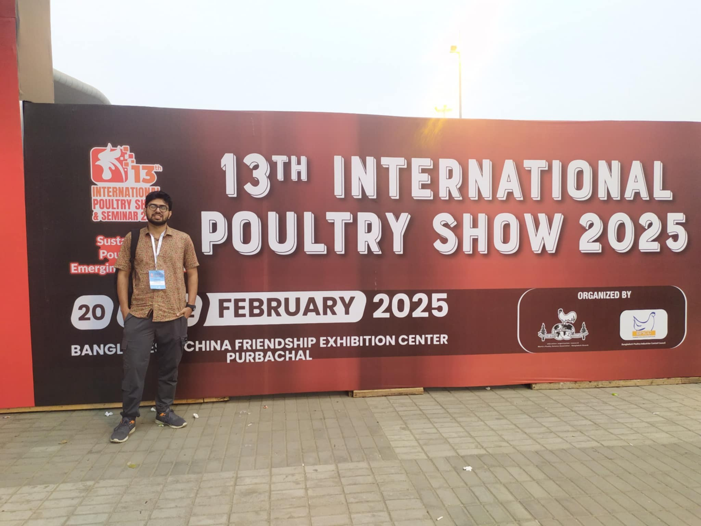
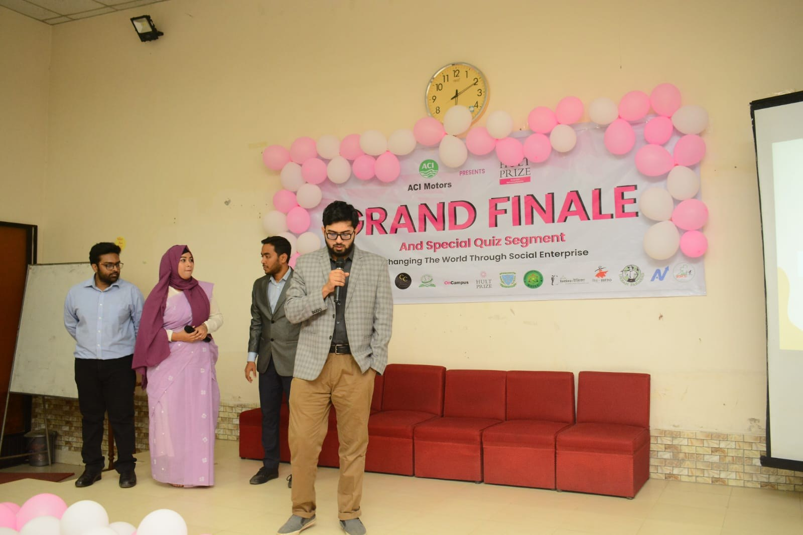

Hi, I'm Md Raihan Patwary
I'm a |
MS researcher in Animal Nutrition turning biodegradable waste into protein, bridging insect science and machine learning to engineer sustainable feed systems.
About
A graduate researcher bridging insect science and machine learning to build sustainable feed systems, turning biodegradable waste into protein, and biology into predictions.

[ Add a photo named about.jpg ]MS Researcher, Animal Nutrition
"The future of global sustainability may lie in the smallest forms of life we once overlooked."
My MS research began with a search for sustainable alternative proteins for animal nutrition, which soon led me to insects. The more I learned, the more fascinated I became, and the clearer it grew that their vast potential is widely overlooked.
My work focuses on three species, the black soldier fly, the superworm, and the yellow mealworm, and how efficiently they convert biodegradable waste into high-quality protein. I combine wet-lab analyses with data-driven methods, including chemometric modeling and machine-learning-driven life cycle assessment.
I'm a two-time Hult Prize finalist and an NST Fellowship recipient, and I'm currently seeking PhD opportunities at the intersection of entomology, animal nutrition, and applied machine learning.
Resume
My academic background, professional experience, and technical skills. Download the full CV for complete details.
Download CVEducation
MS in Animal Nutrition
Dec 2024 — PresentSpecialization in insect-based alternative proteins, life cycle assessment, and ML applications in feed science.
BSc in Animal Husbandry
Jan 2019 — Nov 2024CGPA 3.43/4.00.
Higher Secondary Certificate
2018Science. GPA 5.00/5.00.
Experience
Research Assistant
Dec 2024 — PresentLarval development monitoring, wet-lab analyses, predictive ML modeling in Python, literature review, manuscript preparation.
IELTS Instructor — Speaking & Reading
Sep — Dec 2025Mentored 5 students throughout their IELTS journey.
Intern — Poultry Operations
Jul — Sep 2024Day-old chick management, semi-automated shed operation, feed formulation.
Intern — QC, Feed Mill
Jun — Jul 2024Raw material QC, ration formulation, NIR analysis of feed products.
Intern
May — Jun 2024Field surveys, data collection, analysis, and report writing.
Technical Skills
Research
Manuscripts and publications spanning insect bioconversion, life cycle assessment, and machine learning in feed science.
Comparing chemometric and machine learning approaches for predicting yellow mealworm larval weight from proximate composition
Md Raihan Patwary et al.
Roughage and concentrate based feeding and their impact on beef quality
Meat Research Journal, Bangladesh Meat Science Association · Vol. 5 No. 5 (2025): October
https://doi.org/10.55002/mr.5.5.125
Life cycle assessment of yellow mealworm (Tenebrio molitor) larvae in Bangladesh: prospects for commercialization as a sustainable poultry protein source
NST (National Science and Technology) Fellowship project · ML models predicting LCA indicators from rearing parameters.
Projects
Current and recent research projects across insect bioconversion, sustainable poultry nutrition, and applied machine learning.
Three Species, One Question
Co-leading a study of black soldier fly, superworm, and yellow mealworm as alternative-protein candidates, improving nutrient content while quantifying waste degradation efficiency, with ML-augmented LCA.
Mealworm LCA for Poultry Protein
Led an NST Fellowship project evaluating Tenebrio molitor larvae as a sustainable poultry protein source for Bangladesh, pairing proximate analysis with ML models predicting environmental indicators.
Omega-3 Enriched Broiler Production
Contributed to a World Bank-funded RIC project on omega-3 enrichment in broiler diets, designing feeding trials, running wet-lab analyses, and interpreting treatment effects.
Beyond the Lab
Leadership, entrepreneurship, and the work that happens outside the research bench.

[ Add hult.jpg ]Hult Prize at Bangladesh Agricultural University
A two-time Second Runner-Up at the Hult Prize on-campus competition at Bangladesh Agricultural University, leading interdisciplinary teams to develop socially impactful and sustainable business solutions. In the 2023 competition, under the global challenge "Fashion Urgently Needs a Makeover," I served as the team leader and guided the development of an innovative concept that integrated agricultural resources and by-products into the fashion value chain, promoting sustainability and circular economy principles.
Interests
The research areas that drive my work.
Contact
Open to PhD and research positions where entomology, animal nutrition, and machine learning meet. Collaborations, lab visits, and conversations equally welcome.
Location
Faculty of Animal Husbandry, BAU, Mymensingh 2202, Bangladesh
raihan.1903065@bau.edu.bd
md-raihan-patwary